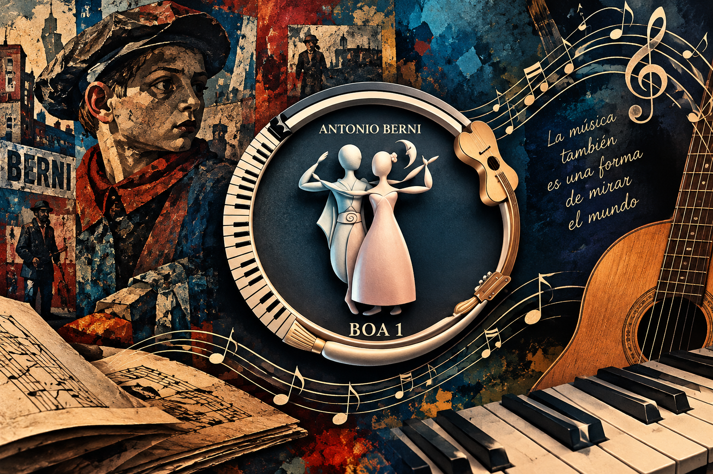

Somos un espacio educativo donde aprender, crear y expresarse a través de diferentes lenguajes artísticos.

Somos una comunidad educativa que integra la formación general con la sensibilidad artística. Promovemos la música, las artes visuales, la expresión corporal y la creatividad como herramientas para aprender y participar en la cultura.
Protagonistas de experiencias de creación, investigación y expresión.
Acompañamos los procesos de aprendizaje y estimulamos la exploración artística.
Construimos proyectos que vinculan la escuela con su entorno cultural.
Nuestra institución nació con el propósito de ofrecer una educación que valore tanto el conocimiento como la capacidad de crear. Con el paso del tiempo, la música y las artes se incorporaron como ejes centrales de proyectos escolares, muestras, conciertos y producciones interdisciplinarias.
Espacio destinado a canciones y producciones realizadas por estudiantes.
Repertorio escolar, composiciones originales y proyectos musicales.
Brindar una educación integral que favorezca el desarrollo de conocimientos, habilidades artísticas, pensamiento crítico, creatividad y trabajo colaborativo.
Ser una comunidad educativa reconocida por promover jóvenes creativos, sensibles, participativos y capaces de utilizar el arte como forma de expresión y transformación de su realidad.
Imaginar nuevas ideas y formas de expresión.
Valorar las producciones y opiniones de los demás.
Construir un espacio donde todas las voces puedan expresarse.
Crear y aprender junto a otros.